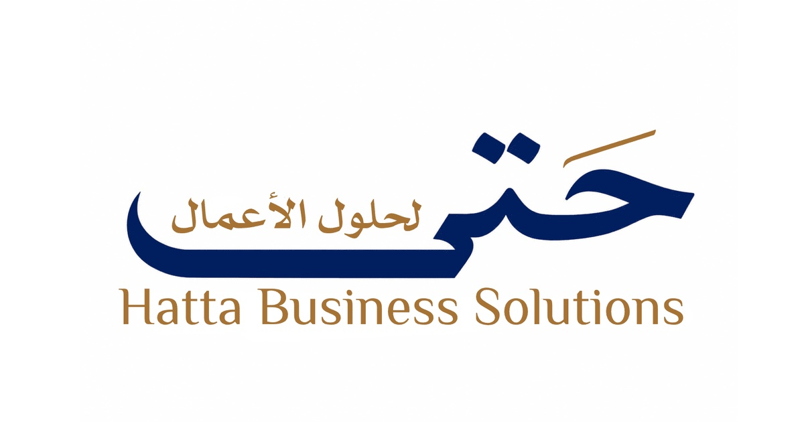
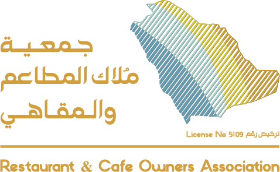
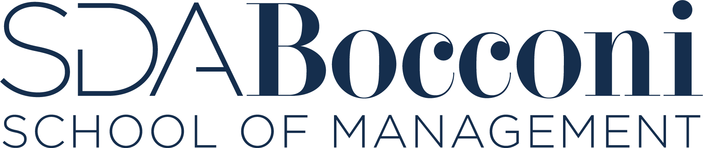

النمو والاستثمار
الاستثمار وتطوير الأصولبناء الفرص الاستثماريةقياس العائد والأثرلجان الاستثمار ومذكرات القرارالتحليل المالي والتقييمإدارة المحافظ الاستثماريةبناء نماذج الأعمالقطاع الأغذية والمشروبات F&B
أجمع خبرة تنفيذية واستشارية تتجاوز 25 عاما في تأسيس وتشغيل الأعمال، وقيادة مفاوضات الصفقات، والعمل الاستشاري مع الملاك ومجالس الإدارة. تشمل خبرتي تقييم الفرص، وتطوير الأصول، وهيكلة الصفقات، وبناء القرار المؤسسي. أساند مجالس الإدارة والقيادات التنفيذية في تحويل الفرص المعقدة إلى مبادرات قابلة للتنفيذ والقياس، توازن بين العائد المالي والأثر المستدام.



نماذج عملية تساعد القيادات وأصحاب الأعمال على التشخيص والاستعداد واتخاذ القرار.
أدوات رقمية طورت لتحويل الخبرة في الاستثمار والصفقات والحوكمة والمخاطر إلى نماذج عملية تساعد القيادات وأصحاب الأعمال على التشخيص والاستعداد واتخاذ القرار.
 استعراض النموذج ↗
استعراض النموذج ↗


I combine over 25 years of executive and advisory experience spanning business founding and operations, transaction negotiations, and advisory work with owners and boards. My experience covers opportunity evaluation, asset development, deal structuring and institutional decision-making. I support boards and executive teams in converting complex opportunities into executable, measurable initiatives that balance financial return with sustainable impact.
Practical diagnostics that help leaders and business owners prepare, assess and decide.
Digital tools developed to translate investment, deal, governance and risk expertise into practical diagnostics that help leaders and business owners prepare, assess and decide.
View example ↗